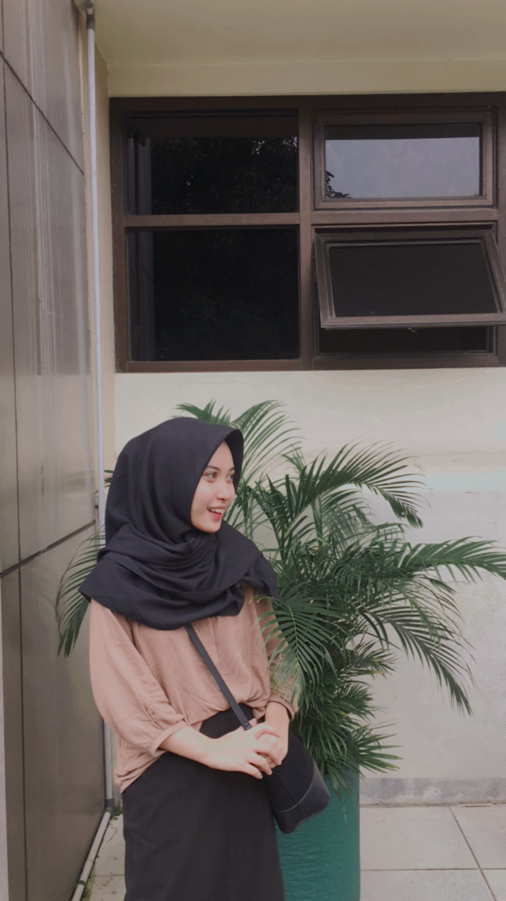

Biodata Elsa
Halo, nama aku Elsa Nurwulandari Kusumawati, orang orang biasa memanggilku Elsa atau Eca. Aku lahir pada tanggal 25 Maret 2003 di Rs Azra Bogor. Saat ini aku tinggal di Kota Bogor. Saat ini akupun bersekolah di salah satu SMK yang terkenal di Bogor yaitu SMK-SMAK Bogor. SMK-SMAK Bogor merupapakn sekolah menengah kejuruan analis kimia, saat ini aku tengah memasuki kelas 11 di SMAKBO. Aku punya banyak hobi salah satunya yaitu menyanyi sambil memainkan alat musik seperti gitar atau piano. Selain itu makan juga menjadi salah satu hobiku, karna menurutku makan bisa mengurangi stress dan menjadi hiburan untuku. Makanan favoritku yaitu makanan yang pedas dan manis. Contohnya seblak, bakso, mie ayam. Untuk makanan manis aku sangat suka minum minuman boba seperti chatime dan kawan kawannya, dan aku juga sangat menyukai donat, apalagi yang rasa coklat hmmm yummyy. Di sekola aku mengikuti ekskul paduan suara yang diberi nama GSA. Aku memilih ekskul ini karena aku sangat suka menyanyi dan banyak sekali event-event yang diadakan GSA setiap tahunnya sehingga bisa menambah pengalamanku.
Bersekolah di SMAKBO adalah salah satu keputusan yan benar benar mengubah hidupku. Karena sekolah ini sangat berbeda dari sekolah kebanyanyakan. Bersekolah di sini sangat berat menurutku, tapi banyak pelajaran berharga yang bisa aku ambil setiap harinya. Di sini aku belajar untuk bisa mebagi waktuku dengan baik dan berinteraksu dengan orang dengan baik pula. Sekian perkenalannya, terimakasih :)
